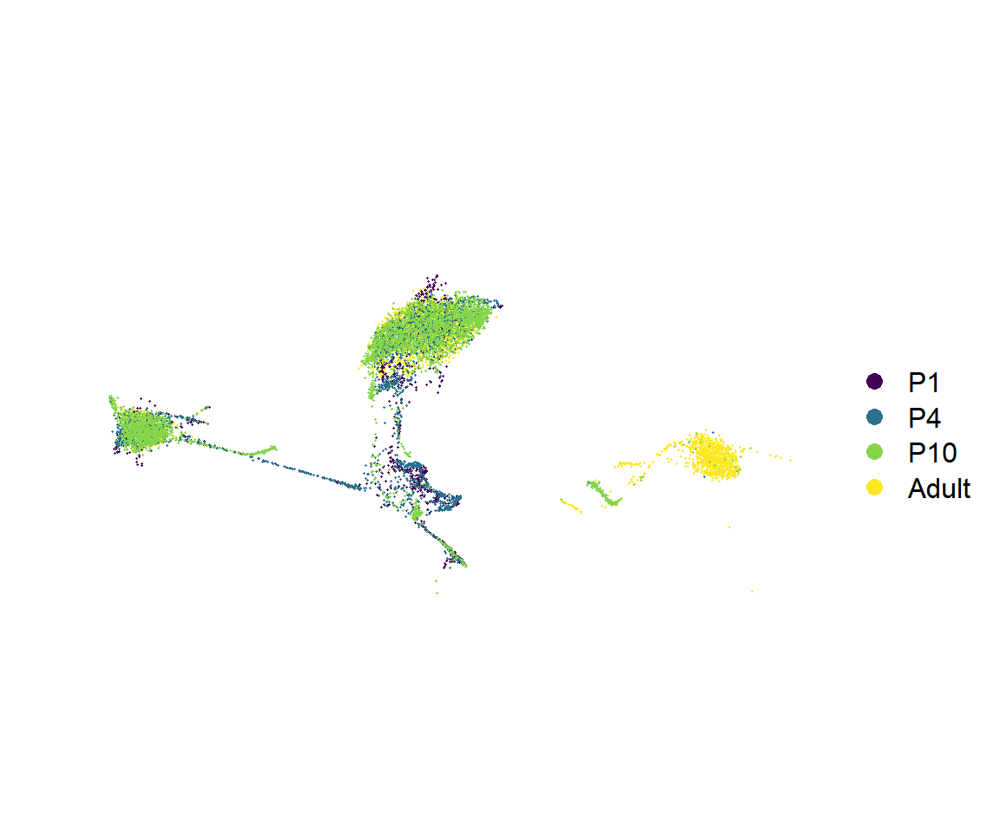
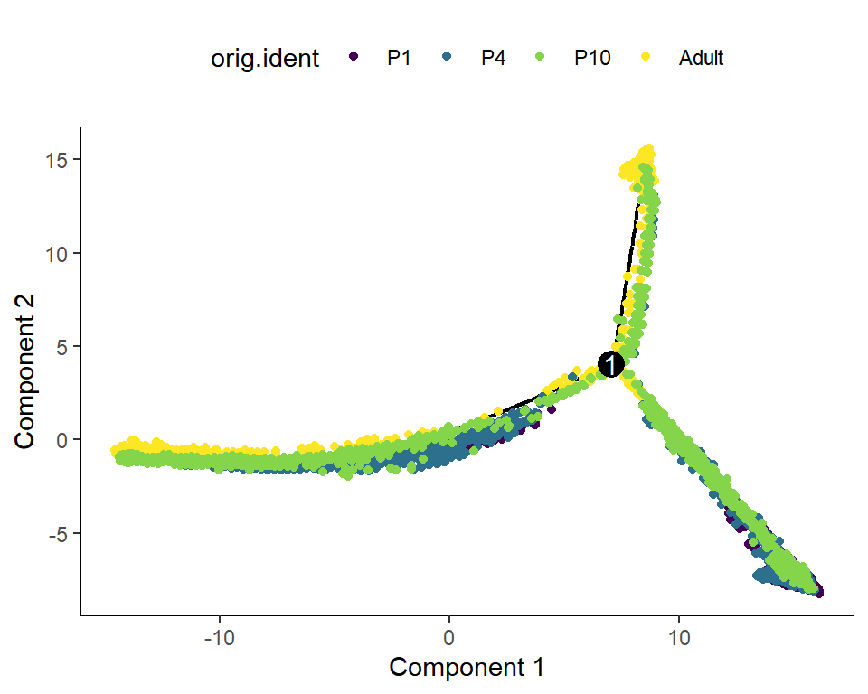
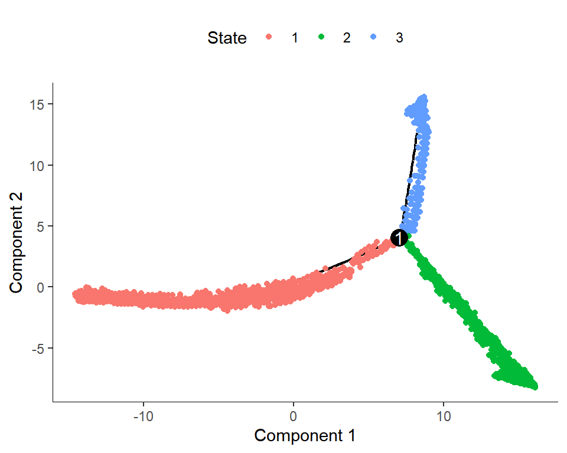
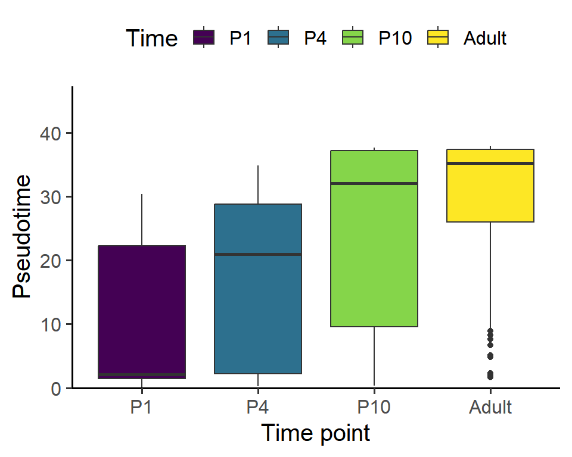
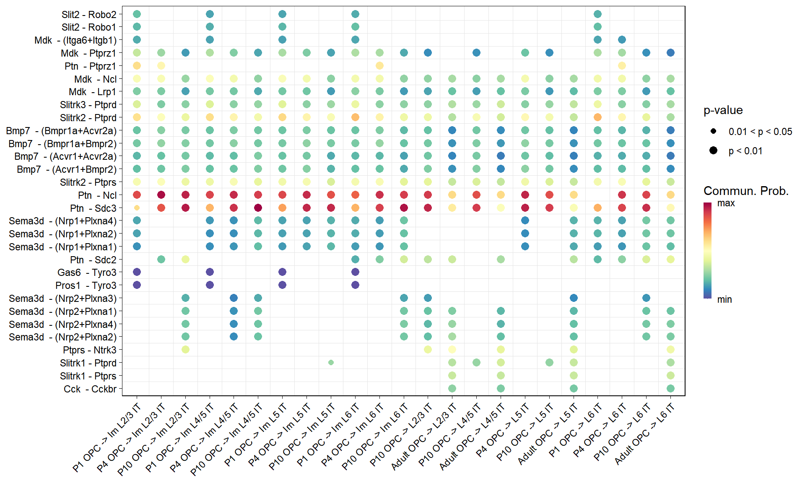

Code
library(Seurat)
library(tidyverse)
library(monocle)
library(CellChat)
source('bin/Palettes.R')library(Seurat)
library(tidyverse)
library(monocle)
library(CellChat)
source('bin/Palettes.R')seu.harmony <- readRDS('../data/seu.harmony.rds')
seu.harmony.metadata <- readRDS('../data/seu.harmony.metadata.rds')
seu.harmony@meta.data <- seu.harmony.metadata
seu.NOneuron <- subset(seu.harmony, cells=colnames(seu.harmony)[which(
seu.harmony$SubType %in% c("NPC", "Astro", "OPC", "Oligo") &
seu.harmony@reductions$umap@cell.embeddings[,"UMAP_2"] > 5
)])
cds <- readRDS("../data/Figure5/cds.NOneuron.rds")P1.CellChat <- readRDS("../data/Figure5/P1.CellChat.rds")
P4.CellChat <- readRDS("../data/Figure5/P4.CellChat.rds")
P10.CellChat <- readRDS("../data/Figure5/P10.CellChat.rds")
Adult.CellChat <- readRDS("../data/Figure5/Adult.CellChat.rds")seu <- seu.NOneuron
seu$SubType <- factor(seu$SubType, levels = names(col_SubType))
seu$orig.ident <- factor(seu$orig.ident, levels = c("P1","P4","P10","Adult"))
Figure_S5A <-
DimPlot(seu,
reduction = 'umap', group.by = "orig.ident", label = F,
cols = col_Time) +
theme(axis.line = element_blank(), axis.ticks = element_blank(),
axis.text = element_blank(), plot.title = element_text(size = 30)) +
labs(x='', y='', title = "") +
coord_fixed()
Figure_S5A
ggsave("../../Figure/FigureS5/Figure_S5A.pdf", plot = Figure_S5A,
height = 5, width = 6, units = "in")cds$orig.ident <- factor(cds$orig.ident, levels = c("P1","P4","P10","Adult"))
Figure_S5B <-
plot_cell_trajectory(cds, color_by = "orig.ident") +
scale_color_manual(values = col_Time)
Figure_S5B
ggsave("../../Figure/FigureS5/Figure_S5B.pdf", plot = Figure_S5B,
height = 4, width = 5, units = "in")cds$orig.ident <- factor(cds$orig.ident, levels = c("P1","P4","P10","Adult"))
Figure_S5C <-
plot_cell_trajectory(cds, color_by = "State")
Figure_S5C
ggsave("../../Figure/FigureS5/Figure_S5C.pdf", plot = Figure_S5C,
height = 4, width = 5, units = "in")data <- data.frame(
Pseudotime = cds$Pseudotime,
Time = as.character(cds$orig.ident)
)
data$Time <- factor(data$Time, levels = c("P1","P4","P10","Adult"))
Figure_S5D <-
ggplot(data, aes(x=Time, y=Pseudotime, fill=Time)) +
geom_boxplot() +
labs(x="Time point", y="Pseudotime") +
scale_y_continuous(breaks=seq(0,45,10), limits = c(0,45),
expand = expansion(mult = c(0, 0.05))) +
theme_classic(base_size = 15) +
theme(legend.position = "top") +
scale_fill_manual(values = col_Time)
Figure_S5D
ggsave("../../Figure/FigureS5/Figure_S5D.pdf", plot = Figure_S5D,
height = 4, width = 5, units = "in")group <- c(rep("IT",8), rep("Non-Neuronal",4))
names(group) <- names(col_SubType)[c(1:8,17,19:21)]
Neuron <- names(group)[c(1:8)]
Non_neuron <- names(group)[c(9:12)]
#P1
df.P1 <- rankNet(P1.CellChat, slot.name = "net", measure = c("weight"),
sources.use = Non_neuron[-3], targets.use = Neuron[-c(5:7)],
mode='single', return.data = T)
df.P1 <- df.P1$signaling.contribution
df.P1$Time <- "P1"
P1.top10 <- as.character(df.P1$name[df.P1$contribution>0.1])
#df.P0 <- df.P0[df.P0$contribution > 0.5,]
#P4
df.P4 <- rankNet(P4.CellChat, slot.name = "net", measure = c("weight"),
sources.use = Non_neuron, targets.use = Neuron[-c(5:6)],
mode='single', return.data = T)
df.P4 <- df.P4$signaling.contribution
df.P4$Time <- "P4"
P4.top10 <- as.character(df.P4$name[df.P4$contribution>0.1])
#df.P4 <- df.P4[df.P4$contribution > 0.5,]
#P10
df.P10 <- rankNet(P10.CellChat, slot.name = "net", measure = c("weight"),
sources.use = Non_neuron, targets.use = Neuron,
mode='single', return.data = T)
df.P10 <- df.P10$signaling.contribution
df.P10$Time <- "P10"
P10.top10 <- as.character(df.P10$name[df.P10$contribution>0.1])
#df.P10 <- df.P10[df.P10$contribution > 0.5,]
#Adult
df.Adult <- rankNet(Adult.CellChat, slot.name = "net", measure = c("weight"),
sources.use = Non_neuron, targets.use = Neuron[-c(1:4)],
mode='single', return.data = T)
df.Adult <- df.Adult$signaling.contribution
df.Adult$Time <- "Adult"
Adult.top10 <- as.character(df.Adult$name[df.Adult$contribution>0.1])
#df.Adult <- df.Adult[df.Adult$contribution > 0.5,]
#name <- unique(c(df.P0$name, df.P4$name, df.P10$name, df.Adult$name))
name <- unique(c(P1.top10, P4.top10, P10.top10, Adult.top10))
mat <- matrix(nrow = length(name), ncol = 4)
rownames(mat) <- name
colnames(mat) <- c("P1","P4","P10","Adult")
mat[,"P1"] <- df.P1$contribution[match(name, df.P1$name)]
mat[,"P4"] <- df.P4$contribution[match(name, df.P4$name)]
mat[,"P10"] <- df.P10$contribution[match(name, df.P10$name)]
mat[,"Adult"] <- df.Adult$contribution[match(name, df.Adult$name)]
mat[is.na(mat)] <- 0
mat <- mat/rowSums(mat)
df <- arrange(as.data.frame(mat), desc(P1), desc(P4), desc(P10), desc(Adult))
df$name <- rownames(df)
df_long <- pivot_longer(df, !name, names_to="Time", values_to="Value")
df_long$Time <- factor(df_long$Time, levels = rev(c("P1","P4","P10","Adult")))
df_long$name <- factor(df_long$name, levels = rev(df$name))all.name <- levels(df_long$name)
#P1
df.P1 <- netVisual_bubble(
P1.CellChat, sources.use = Non_neuron, targets.use = Neuron,
pairLR.use = data.frame("interaction_name" = all.name),
remove.isolate = FALSE, return.data = T)
df.P1 <- df.P1$communication
df.P1 <- df.P1[!(is.na(df.P1$source)),]
df.P1 <- df.P1[!(is.na(df.P1$target)),]
df.P1$source.target <- paste("P1", df.P1$source.target)
#P4
df.P4 <- netVisual_bubble(
P4.CellChat, sources.use = Non_neuron, targets.use = Neuron,
pairLR.use = data.frame("interaction_name" = all.name),
remove.isolate = FALSE, return.data = T)
df.P4 <- df.P4$communication
df.P4 <- df.P4[!(is.na(df.P4$source)),]
df.P4 <- df.P4[!(is.na(df.P4$target)),]
df.P4$source.target <- paste("P4", df.P4$source.target)
#P4
df.P10 <- netVisual_bubble(
P10.CellChat, sources.use = Non_neuron, targets.use = Neuron,
pairLR.use = data.frame("interaction_name" = all.name),
remove.isolate = FALSE, return.data = T)
df.P10 <- df.P10$communication
df.P10 <- df.P10[!(is.na(df.P10$source)),]
df.P10 <- df.P10[!(is.na(df.P10$target)),]
df.P10$source.target <- paste("P10", df.P10$source.target)
#P4
df.Adult <- netVisual_bubble(
Adult.CellChat, sources.use = Non_neuron, targets.use = Neuron,
pairLR.use = data.frame("interaction_name" = all.name),
remove.isolate = FALSE, return.data = T)
df.Adult <- df.Adult$communication
df.Adult <- df.Adult[!(is.na(df.Adult$source)),]
df.Adult <- df.Adult[!(is.na(df.Adult$target)),]
df.Adult$source.target <- paste("Adult", df.Adult$source.target)
df.merge <- as.data.frame(rbind(df.P1, df.P4, df.P10, df.Adult))
df <- df.merge[df.merge$source=="OPC",]
df$interaction_name <- factor(df$interaction_name, levels = all.name)
df$interaction_name_2 <- factor(
df$interaction_name_2,
levels = unique(df$interaction_name_2[order(df$interaction_name)]))
df$target <- factor(df$target, levels = Neuron)
df$source.target <- factor(
df$source.target,
levels = unique(df$source.target[order(df$target)]))
values <- c(1,2,3); names(values) <- c("p > 0.05", "0.01 < p < 0.05","p < 0.01")
col <- rev(colorRampPalette(RColorBrewer::brewer.pal(11,"Spectral"))(99))
Figure_S5E <-
ggplot(df, aes(x = source.target, y = interaction_name_2, color = prob, size = pval)) +
geom_point(pch = 16) +
geom_vline(xintercept=seq(1.5, length(unique(df$source.target))-0.5, 1),lwd=0.1,colour="grey90") +
geom_hline(yintercept=seq(1.5, length(unique(df$interaction_name_2))-0.5, 1),lwd=0.1,colour="grey90") +
theme_linedraw() +
theme(panel.grid.major = element_blank(),
axis.text.x = element_text(angle = 45, hjust= 1),
axis.title.x = element_blank(),
axis.title.y = element_blank()) +
scale_x_discrete(position = "bottom") +
scale_radius(
range = c(min(df$pval), max(df$pval)),
breaks = sort(unique(df$pval)),
labels = names(values)[values %in% sort(unique(df$pval))], name = "p-value") +
scale_colour_gradientn(colors = col, na.value = "white",
limits=c(quantile(df$prob, 0,na.rm= T),
quantile(df$prob, 1,na.rm= T)),
breaks = c(quantile(df$prob, 0,na.rm= T),
quantile(df$prob, 1,na.rm= T)),
labels = c("min","max")) +
guides(color = guide_colourbar(barwidth = 0.5, title = "Commun. Prob."))
Figure_S5E
ggsave("../../Figure/FigureS5/Figure_S5E/Figure_S5E_OPC.pdf", plot = Figure_S5E,
height = 6.0, width = 10, units = "in")